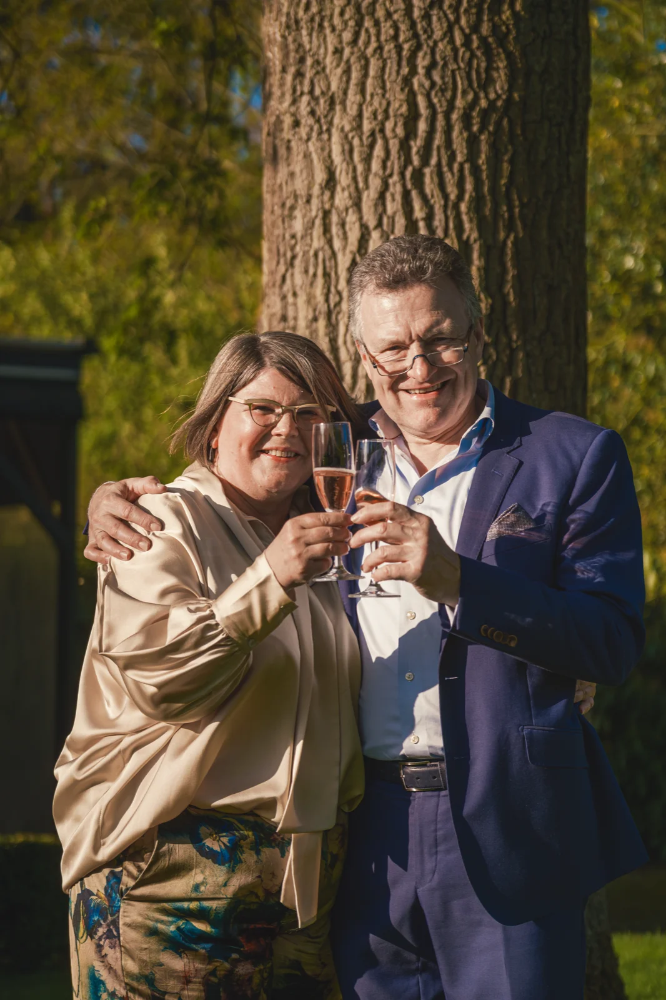
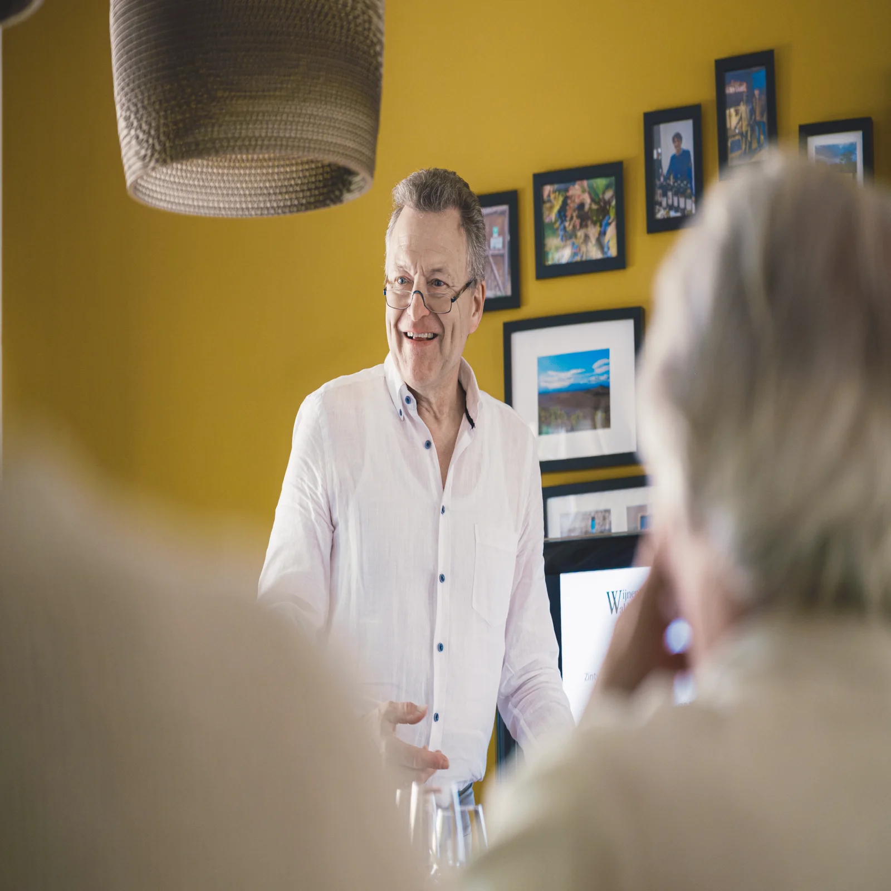

Rode Wijnen
Zuid-Frankrijk · Italië · SpanjeZuiderse rassen met karakter en warmte — van de Languedoc tot de Toscane, van de Rioja tot de Rhône-vallei.
Bekijk selectieFamiliale domeinen, uitzonderlijke wijnen vol smaak en passie — op afspraak te beleven in Zoersel.
Wijnen Waldo is opgericht door Waldo en Ann Severins in Zoersel. Gedreven door passie voor het wijnverhaal nemen ze jullie mee naar familiale domeinen en uitzonderlijke wijnen vol smaak en karakter.
Waldo volgde de professionele opleiding WSET Level 3 en bezoekt elk domein persoonlijk — want een goede wijn begint in de wijngaard. Luisteren naar jouw wensen, laten proeven en verhalen vertellen: dat is Wijnen Waldo.
— Waldo & Ann

"Wijn is zoveel meer dan wat je proeft. Het zijn de mensen, de aarde, de passie erachter — en dat verhaal willen we met jullie delen."
— Waldo & Ann, Wijnen Waldo
Waldo zoekt naar domeinen met respect voor mens en natuur — familiale producenten waar kwaliteit en passie hand in hand gaan.
Zuiderse rassen met karakter en warmte — van de Languedoc tot de Toscane, van de Rioja tot de Rhône-vallei.
Bekijk selectieFrisse, aromatische whites van familiale domeinen met zon in het glas — verrassend, toegankelijk en vol terroir.
Bekijk selectieGrower-champagnes van kleine huizen, biologische Crémants en festieve Cavas voor elk moment van vieren.
Bekijk selectieEen biodynamisch geteelde Pinot Noir uit het hart van de Côte de Nuits. Diepe kersen, aarde en een subtiele rooktoets — een wijn die om geduld vraagt en er royaal voor beloont.
Bij Wijnen Waldo koop je niet alleen wijn — je stapt een wereld binnen.
Vraag een privédegustatie aan en laat Waldo jullie persoonlijk begeleiden. Thematisch, op maat van jullie smaak — met verhalen over elk glas.
Neem deel aan onze tuinproeverijen — een relaxte, gezellige setting waar je kennismaakt met nieuwe wijnen en de mensen achter de domeinen.
Volg een van onze wijncursussen en leer alles over druivenrassen, regio's, proeftechnieken en spijs-wijncombinaties. Waldo (WSET Level 3) deelt zijn kennis met plezier.
Op zoek naar een origineel cadeau? Waldo helpt je graag een wijn of geschenkmand samenstellen die écht past bij de gelegenheid en de persoon.

Waldo (WSET Level 3) deelt zijn kennis in interactieve cursussen voor beginners en enthousiastelingen. Theorie en praktijk gaan hand in hand — altijd met een glas erbij.
Bekijk het cursusaanbod"Waldo is geen verkoper, hij is een verteller. Na een uur in zijn kelder begrijp je niet alleen de wijn — je voelt het verhaal erachter."
"De cursus was een openbaring. Maanden later denk ik nog aan elke les. Waldo maakt van wijn iets menselijks en toegankelijks — zonder de diepgang te verliezen."
"Het bedrijfsevenement dat Waldo en Ann voor ons verzorgden was perfect. Professioneel, warm en onvergetelijk. Onze klanten spreken er nog altijd over."
Schrijf je in op de Brieven van Waldo en ontvang als eerste nieuws over nieuwe wijnen, tuinproeverijen en cursussen — persoonlijk geschreven door Waldo zelf.